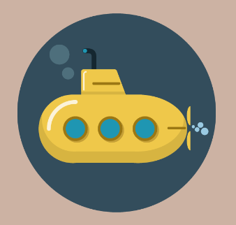

PORTFOLIO

Freelancer is a free bootstrap theme created by
Start Bootstrap. The download includes the
complete source files including HTML, CSS, and
JavaScript as well as optional SASS stylesheets
for easy customization.
You can create your own custom avatar for the
masthead, change the icon in the dividers, and
add your email address to the contact form to
make it fully functional!